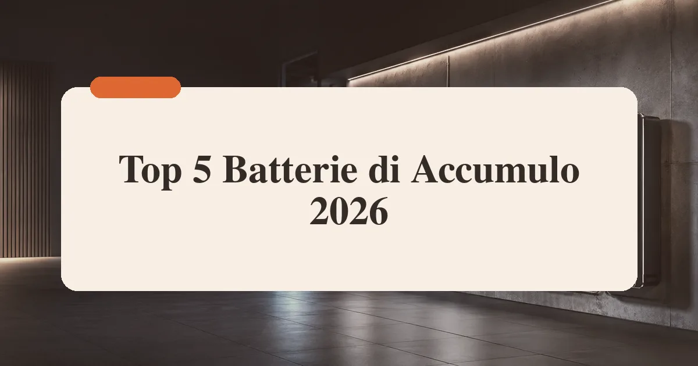

Per scegliere una batteria di accumulo fotovoltaico bisogna sapere quanta energia resta disponibile dopo i consumi diretti e quanta ne servirà quando l'impianto non produce. Il nome del marchio viene dopo. Capacità, potenza, compatibilità, condizioni di garanzia e funzionamento durante un blackout descrivono esigenze differenti. Una classifica che li riduce a un unico voto rischia di far acquistare un sistema poco adatto alla casa.
Questa pagina sostituisce il confronto generico fra marchi con cinque criteri applicabili alle offerte reali. Non assegna un primo posto assoluto e non riporta prezzi installati privi di una quotazione riferita all'intervento. Trovi invece esempi di lettura, un bilancio energetico illustrativo e una scheda scaricabile. Il dimensionamento e la compatibilità dell'impianto restano verifiche da affidare ai professionisti competenti.
Primo criterio: energia utile e profilo dei consumi
La capacità indica una quantità di energia, normalmente espressa in kilowattora. Distingui il dato nominale da quello effettivamente utilizzabile secondo i documenti del prodotto. Riserva impostata, condizioni operative e definizione della misura possono modificare la lettura. La domanda non è soltanto «quanti kilowattora compro?», ma «quanta energia potrò utilizzare nelle condizioni previste dal mio sistema?».
Per rispondere servono dati di produzione e consumo distribuiti nel tempo. Il totale annuale nasconde le giornate nelle quali la batteria potrebbe restare poco carica e quelle nelle quali potrebbe riempirsi presto. Raccogli, quando disponibili, letture del monitoraggio e profili dell'utenza; segnala eventuali cambiamenti previsti, come nuovi occupanti o una pompa di calore. Non trattare una giornata estiva soleggiata come rappresentativa di tutto l'anno.
Un esempio documentale utile è la scheda ufficiale BYD Battery-Box HVS, che associa l'energia utile a precise condizioni di prova. È un esempio di come leggere una scheda, non una raccomandazione del prodotto. Per qualunque offerta chiedi il documento relativo al modello e alla revisione proposti, con le condizioni pertinenti.
Secondo criterio: potenza e carichi contemporanei
La potenza, espressa in kilowatt, descrive quanto rapidamente il sistema può erogare o assorbire energia. Una batteria capiente non può necessariamente alimentare qualsiasi combinazione di apparecchi. Chiedi potenza continua, eventuale potenza di picco, durata del picco e condizioni alle quali i dati valgono. Considera inoltre i limiti dell'inverter e dell'intera configurazione, non soltanto quelli del modulo batteria.
Se, per esempio, un carico ipotetico richiede 3 kilowatt per un'ora, utilizza 3 kilowattora. Se richiede 6 kilowatt per mezz'ora, l'energia è ancora 3 kilowattora, ma la potenza necessaria è diversa. Questo esercizio non descrive apparecchi specifici: chiarisce perché capacità e potenza non siano sinonimi. Il progettista deve verificare sia la quantità di energia sia la possibilità di servire i carichi previsti.
Prepara un elenco delle contemporaneità importanti, senza aprire quadri o eseguire prove elettriche. Indica quali servizi devono restare disponibili e quali possono essere gestiti in orari diversi. Una richiesta chiara permette di discutere eventuali sistemi di controllo e priorità. Comprare più capacità non risolve automaticamente un limite di potenza o una configurazione elettrica incompatibile.
Terzo criterio: compatibilità dell'impianto completo
Fotovoltaico esistente, inverter, batteria e sistemi di gestione devono appartenere a una configurazione compatibile e documentata. La frase «si collega a tutto» non è sufficiente. Chiedi identificazione dei componenti, eventuale elenco di compatibilità, versioni richieste e responsabilità della verifica. Se l'offerta riguarda un impianto già installato, il sopralluogo deve partire dai componenti realmente presenti.
Un'integrazione può richiedere opere o apparecchi ulteriori. Chiedi che siano descritti nel preventivo e che il risultato atteso sia riferito al sistema completo. I documenti tecnici e le procedure di connessione pertinenti devono essere verificati dall'installatore. Non modificare autonomamente collegamenti o impostazioni per provare una batteria: oltre alla sicurezza, rischi di rendere poco chiaro il perimetro dell'intervento e delle responsabilità.
Considera anche collocazione, ambiente e accessibilità. Ingombri, condizioni ammesse dal fabbricante, possibilità di manutenzione e percorsi vanno controllati prima dell'ordine. Una parete libera non dimostra che il locale sia adatto. Chiedi dove verranno installati i componenti e come sarà garantito l'accesso necessario per i controlli previsti dal prodotto.
Quarto criterio: garanzia e assistenza leggibili
«Dieci anni di garanzia» non racconta tutte le condizioni. Leggi quali parti sono coperte, eventuali limiti di energia movimentata o cicli, capacità residua dichiarata, requisiti di utilizzo e modalità di richiesta. Il documento deve essere pertinente al territorio, alla data e al modello proposto. Una condizione trovata online per un altro mercato non dimostra quale tutela venga offerta nel tuo contratto.
Chiedi chi riceve la segnalazione, come avviene una diagnosi e quali attività o costi siano eventualmente esclusi. Distingui garanzia del prodotto, intervento dell'installatore e servizio aggiuntivo. Se è richiesto un collegamento per monitoraggio o aggiornamenti, fai chiarire modalità, gestione degli account e funzionamento in assenza di connessione. Il proprietario deve sapere a chi rivolgersi senza ricostruire la catena dei fornitori dopo un guasto.
Per una batteria modulare chiedi anche condizioni dell'espansione futura. Non presumere di poter aggiungere qualunque modulo dopo molti anni. Compatibilità, disponibilità e istruzioni del fabbricante possono limitare le possibilità. Se l'espansione è un motivo importante dell'acquisto, chiedi una spiegazione scritta delle condizioni attualmente previste, senza trasformarla in una promessa sulla disponibilità futura dei prodotti.
Quinto criterio: backup e funzionamento durante un blackout
L'accumulo per aumentare l'autoconsumo non implica automaticamente alimentazione dell'abitazione durante un'interruzione di rete. Servono una configurazione e componenti previsti per quella funzione. La pagina ufficiale Fronius sull'accumulo e sull'alimentazione di backup mostra, per il proprio sistema, il ruolo di inverter, accumulo e commutazione. Il principio utile per il confronto è chiedere l'elenco completo dei componenti necessari.
Definisci quali circuiti o servizi vuoi alimentare, per quanto tempo e con quali condizioni. Il risultato dipende anche dallo stato di carica al momento dell'interruzione e dai limiti di potenza. «Backup della casa» può essere una descrizione troppo ampia se la configurazione serve soltanto circuiti selezionati. Chiedi cosa resta effettivamente alimentato e quali passaggi siano automatici o manuali.
La verifica e le prove devono essere organizzate dall'installatore secondo le procedure pertinenti. Non simulare un blackout intervenendo su parti dell'impianto per conto tuo. Alla consegna fatti spiegare segnalazioni, limiti e comportamento previsto. Una funzione compresa ma non illustrata può generare aspettative sbagliate proprio quando serve usarla.
Caso illustrativo: perché conta il limite più piccolo
Immaginiamo una giornata con 9 kilowattora di energia fotovoltaica eccedente i consumi diretti e una richiesta serale di 6 kilowattora. Supponiamo una batteria con 8 kilowattora utili, inizialmente vuota e senza riserva, e un rendimento complessivo semplificato del percorso pari al 90%. Sono ipotesi inventate per spiegare un bilancio, non prestazioni attribuite a un prodotto o a una casa.
Per consegnare 6 kilowattora alla sera, nel modello servirebbero circa 6,67 kilowattora in ingresso al percorso di accumulo: 6 diviso 0,90. Dei 9 disponibili, non occorre quindi usarli tutti per soddisfare quel fabbisogno. Aumentare la capacità non aumenta automaticamente l'energia utile alla casa in quella giornata, se il consumo successivo resta fermo a 6. Un'eventuale riserva o un profilo diverso cambierebbero il calcolo.
| Dato o calcolo dell'esercizio | Valore |
|---|---|
| Eccedenza disponibile dopo i consumi diretti | 9 kWh |
| Richiesta successiva ipotizzata | 6 kWh |
| Rendimento complessivo semplificato | 90% |
| Energia in ingresso necessaria | Circa 6,67 kWh |
| Perdite nel percorso considerato | Circa 0,67 kWh |
In una giornata con soli 3 kilowattora di eccedenza, lo stesso modello restituirebbe al massimo 2,7 kilowattora, prima di considerare altri limiti. La capacità inutilizzata non crea energia. Su un anno, inoltre, la batteria può trovarsi in stati di carica diversi e attraversare molte modalità. Per una previsione occorre un'analisi del profilo, non la moltiplicazione della giornata migliore per 365.
Valutare il beneficio economico senza contare due volte l'energia
L'energia utilizzata dalla batteria può ridurre un prelievo dalla rete, ma l'energia con cui la carichi avrebbe potuto avere un altro utilizzo o una valorizzazione alternativa. Nel confronto occorre considerare entrambi i lati, oltre alle perdite. Non moltiplicare tutta l'energia caricata per il prezzo di acquisto come se venisse restituita integralmente e senza alcun costo alternativo.
Per leggere la componente di consumo puoi consultare la guida ARERA alle voci di spesa. Nel foglio mantieni separati investimento, energia restituita, costo variabile evitato, valorizzazione alternativa dell'energia e costi aggiuntivi documentati. Non riportiamo qui tariffe o incentivi come valori correnti: per il caso reale devono essere verificati nelle forniture e nelle regole pertinenti.
Se una simulazione promette un rientro, chiedi periodo, degrado considerato, costi inclusi e variazioni ipotizzate. Il semplice rapporto fra investimento e risparmio di un anno non garantisce che quel risultato si ripeta. Un'analisi utile mostra almeno come cambiano gli esiti con meno energia disponibile o con prezzi diversi. Se serve una valutazione economica dell'investimento, falla discutere con chi può analizzare i dati completi.
Confrontare tre offerte con una scheda comune
Invia ai fornitori lo stesso elenco di esigenze e chiedi di identificare le esclusioni. La scheda dovrebbe riportare capacità utile con condizioni, potenza continua, configurazione, backup, opere, documenti e assistenza. Non lasciare che una voce non quotata venga letta come inclusa. Prima di scegliere il totale più basso, risolvi le differenze che cambiano il servizio offerto.
Scarica il modello CSV per confrontare le batterie di accumulo. È uno strumento originale del Giornale Edile, senza marchi preordinati e senza punteggi che fingano una classifica oggettiva. Compila una colonna per ogni offerta e conserva il riferimento del documento che giustifica la risposta. Se un valore manca, chiedilo: non sostituirlo con quello di un modello simile.
Quali dati conservare dopo la consegna
Archivia schema e identificazione dei componenti, documenti pertinenti, istruzioni, condizioni di garanzia e riferimenti dell'assistenza. Fatti spiegare come leggere produzione, consumi, carica e scarica. Verifica inoltre a chi appartengano gli account del monitoraggio e come accedervi in futuro. Il proprietario deve poter consultare i propri dati senza dipendere da credenziali condivise informalmente.
Quando valuti le prestazioni, confronta periodi e grandezze coerenti. Energia caricata, energia scaricata e prelievo evitato non sono tre nomi per lo stesso dato. Se il sistema comprende altri interventi, come una pompa di calore, considera le variazioni d'uso. La guida al confronto tra caldaia e pompa di calore mostra perché le ipotesi devono essere condivise prima di attribuire un risparmio a una singola scelta.
Tre profili di utilizzo da discutere con l'installatore
Una famiglia spesso presente di giorno può utilizzare direttamente una parte consistente della produzione. In quel caso la valutazione dell'accumulo deve partire dall'eccedenza rimasta dopo quei consumi. Non attribuire alla batteria l'energia che la casa avrebbe già utilizzato senza accumularla. Il confronto corretto richiede una situazione iniziale riconoscibile e una simulazione della modifica proposta.
Una famiglia assente durante il giorno può avere più domanda serale, ma questo non dimostra da solo la taglia necessaria. Occorre sapere quanta produzione eccedente sia disponibile nelle diverse stagioni e quali carichi siano presenti. Se l'obiettivo principale è spostare energia alla sera, chiedi di vedere il bilancio per periodi rappresentativi. Il totale annuale serve come riepilogo, dopo aver compreso il comportamento nel tempo.
Un'utenza che cerca soprattutto continuità di alimentazione pone invece una domanda differente. La scelta della riserva, i circuiti serviti e la potenza disponibile durante l'interruzione devono essere discussi insieme. L'energia mantenuta per emergenza potrebbe non essere destinata all'uso quotidiano nello stesso modo. La simulazione deve rappresentare questa scelta, evitando di promettere contemporaneamente il massimo utilizzo giornaliero e una riserva sempre piena senza spiegarne le condizioni.
Cambiamenti futuri: separa intenzioni e interventi già definiti
Auto elettrica, climatizzazione e nuovi occupanti possono cambiare il profilo della casa. Segnalali, ma distingui un progetto confermato da un'idea ancora priva di data. Chiedi due scenari se necessario: configurazione attuale e configurazione futura con ipotesi esplicite. In questo modo puoi valutare l'espansione o le predisposizioni senza acquistare capacità sulla base di consumi che forse non si presenteranno.
Conserva la data dei dati utilizzati. Un confronto preparato prima di installare una pompa di calore potrebbe non descrivere più l'utenza dopo il cambiamento. Aggiornare il profilo aiuta a discutere l'impianto con elementi osservabili. Il monitoraggio ha valore quando permette di capire come viene utilizzata l'energia e quali condizioni siano cambiate, non soltanto quando mostra una percentuale elevata in una giornata favorevole.
Controllare una simulazione commerciale ricevuta
Quando ricevi un grafico di risparmio, chiedi quali dati siano misurati e quali stimati. Produzione storica dell'impianto, profilo di consumo e variazioni future devono essere identificabili. Se la simulazione utilizza una casa tipo, chiedi quanto rappresenti la tua situazione e quali informazioni servano per personalizzarla. Un disegno preciso non rende osservati i numeri che contiene.
Controlla soprattutto la distinzione fra autoconsumo diretto e passaggio nella batteria. Se la simulazione attribuisce tutto il consumo fotovoltaico all'accumulo, il confronto con la situazione iniziale può diventare poco leggibile. Chiedi una colonna senza batteria e una con batteria, mantenendo uguali gli altri dati. Le differenze devono poter essere spiegate attraverso energia caricata, restituita e non più prelevata, con le perdite e i limiti del modello visibili.
Infine conserva una copia del documento con la data e le ipotesi utilizzate. Dopo l'installazione potrai confrontare gli andamenti osservati con quel riferimento, discutendo eventuali differenze di uso e di condizioni. Non si tratta di pretendere una previsione identica a ogni giornata futura, ma di capire quali premesse abbiano guidato la proposta e quali cambiamenti possano spiegare il risultato.
Domande frequenti
Una batteria più grande è sempre migliore?
No. Occorre confrontare energia disponibile, richiesta successiva e limiti del sistema nel tempo. Una capacità aggiuntiva poco utilizzata non produce automaticamente più beneficio. Il dimensionamento richiede dati e scenari riferiti alla casa.
L'accumulo mantiene accesa la casa durante un blackout?
Solo se la configurazione prevede quella funzione con componenti e circuiti adatti. Chiedi quali carichi siano serviti, con quali potenze e modalità. La presenza della batteria non basta a dimostrare la disponibilità del backup.
Posso confrontare soltanto il prezzo per kilowattora?
È un indicatore parziale. Capacità utile, potenza, compatibilità, opere e assistenza possono essere differenti. Prima rendi coerente il perimetro delle offerte, poi confronta il costo completo dei sistemi che rispondono alla stessa esigenza.